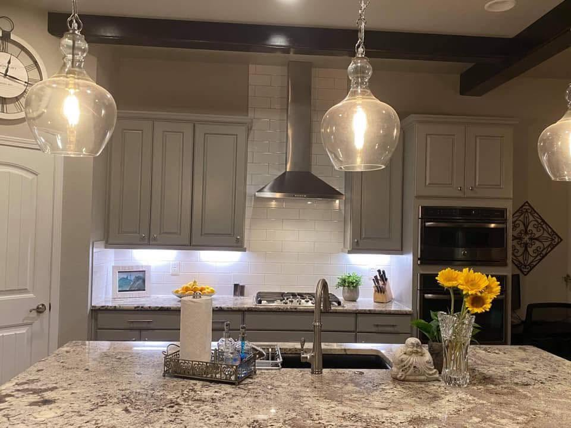
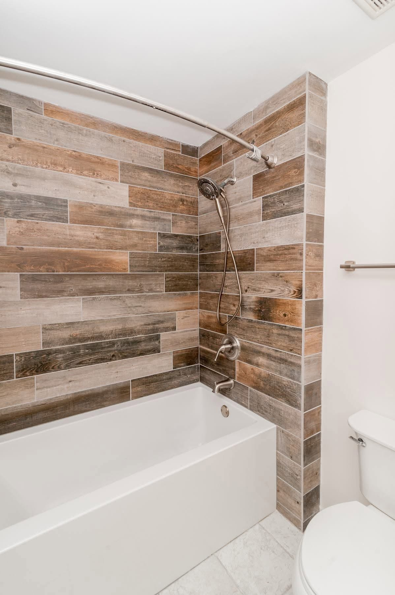
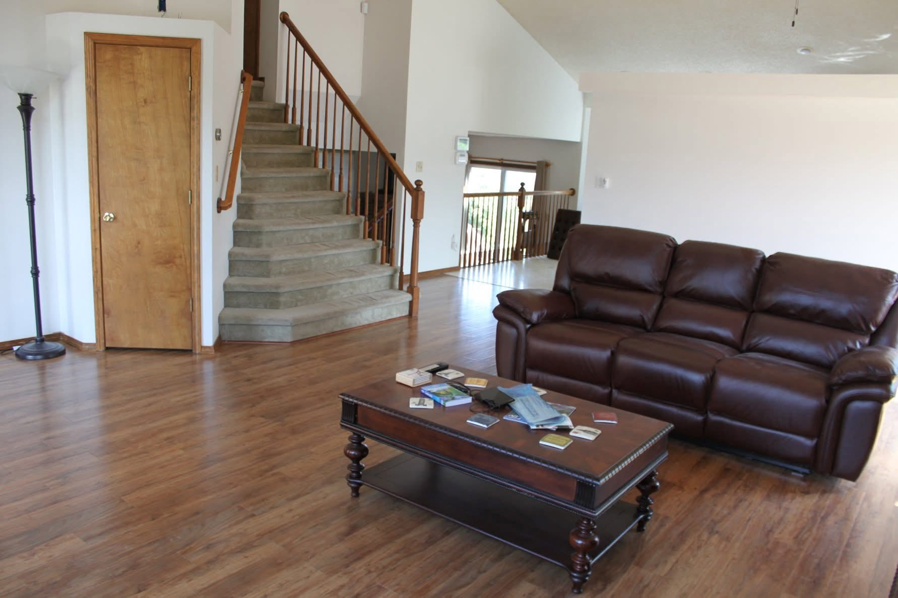
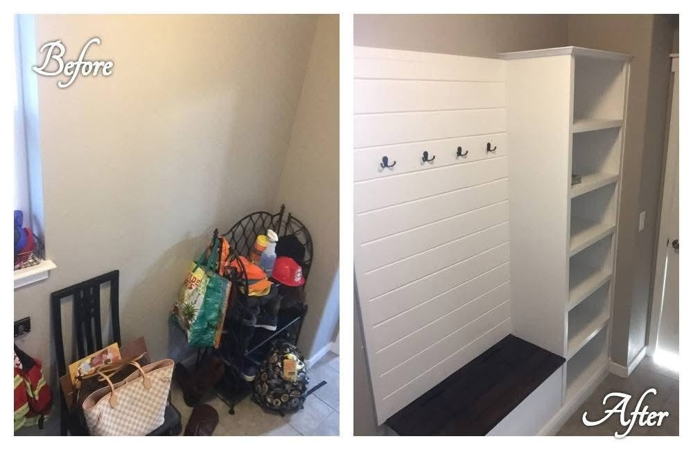

Our Remodeling & Renovation Services
At Kaizen Construction, we bring continuous improvement, meticulous craftsmanship, and transparent communication to every project across Colorado Springs. Whether you are updating a single room or completing a whole-home transformation, we treat your living space with respect, keeping job sites clean and working efficiently to turn your vision into reality.
Featured Specialized Services

Kitchen Remodels
From full layout reconfigurations and cabinet installations to custom stone countertops and tile backsplashes, we craft functional, beautiful culinary spaces tailored to your daily routine.
The Kaizen Difference: We focus on precision prep work and seamless layout transitions. Every cabinet is anchored level, backsplashes are meticulously aligned, and plumbing/electrical upgrades are executed cleanly with zero shortcuts.

Bathroom Remodels
Transform your worn bathroom into a spa-like retreat with custom walk-in tile showers, alcove tub surrounds, modern vanities, and upgraded fixtures.
The Kaizen Difference: Waterproofing integrity is non-negotiable. We install industry-leading moisture barrier systems under every shower wall and floor tile, protecting your home's framing for decades to come.

Tiling & Custom Tile Work
We specialize in intricate tile patterns, including herringbone, chevron, mosaic accents, vertical stack, and large-format porcelain wall and floor tile.
The Kaizen Difference: Crisp grout lines and flat surfaces set our tile work apart. We take the extra time to properly level subfloors and use mechanical tile leveling clips to eliminate lippage entirely.

Flooring Installation
Upgrade your floors with durable luxury vinyl plank (LVP), hardwood, laminate, or engineered flooring built to withstand active family living and Colorado weather.
The Kaizen Difference: We pay fanatical attention to floor prep and transitions, ensuring smooth threshold joins between room types and flush trim installation along baseboards.

Special Projects & Custom Built-Ins
Enhance your home's functionality with custom storage solutions, mudroom cubbies, decorative fireplace surrounds, ornate mantels, and accent walls.
The Kaizen Difference: We combine structural strength with fine finish carpentry, taking custom measurements and tailoring built-in features to seamlessly match your home's existing architecture.
Comprehensive Remodeling & Contracting Services
In addition to our full room remodels, Kaizen Construction offers end-to-end contracting capabilities for projects of any size:
Basement Finishes
Turn raw concrete storage into living space, family entertainment rooms, guest bedrooms, or home offices. We handle framing, insulation, electrical layout, drywall, and finish trim.
The Kaizen Difference: Proper thermal insulation, moisture vapor barrier planning, and code-compliant egress layout keep your basement dry, comfortable, and energy-efficient.
Drywall Installation & Repair
From patching wall cutouts and water damage repairs to hanging and finishing new rooms with smooth or knock-down texture finishes.
The Kaizen Difference: Seamless tape-and-mud blending means repaired sections match surrounding walls invisibly after paint.
Finish Carpentry
Detailed trim installation including baseboards, door casings, crown molding, interior door hanging, and custom shelving.
The Kaizen Difference: Tight miter joints, caulked finish lines, and countersunk fasteners ready for clean paint finishes.
Interior Painting
Full room and accent wall painting using durable, premium low-VOC paints for crisp lines along trim and ceilings.
The Kaizen Difference: Comprehensive wall prep—filling nail holes, sanding rough spots, and masking off floors—delivers flawless coverage.
Custom Play Structures for Kids
Sturdy indoor or outdoor custom timber playhouses, climbing features, and treehouse structures built safely for growing families.
The Kaizen Difference: Heavy-duty structural anchoring, rounded wood edges, and non-toxic wood seals prioritize child safety and long-term durability.
Handyman & Repair Services
Reliable home maintenance, minor fix-its, fixture replacements, door hardware adjustments, and punch-list repairs.
The Kaizen Difference: Transparent project scoping, punctual scheduling, and accurate time estimates ensure no surprising bill additions.